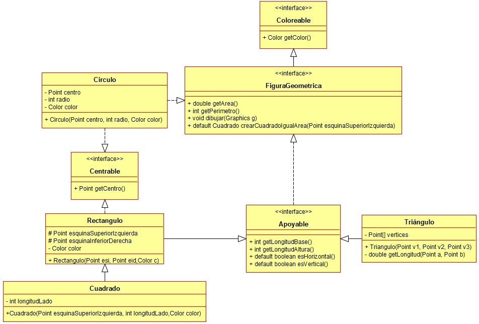

Ejercicio 26 : Consulta el diagrama de clases Figuras geométricas y programa las interface Coloreable, Centrable y FiguraGeométrica.

-
Coloreable: Es cualquier cosa que tiene un color.
-
Centrable: Es un objeto que tiene un centro.
-
getCentro: Devuelve un Point con las coordenadas del centro del objeto.
-
FiguraGeométrica: Es una figura geométrica cualquiera.
-
getArea: devuelve el área de la figura.
-
getPerímetro: devuelve el perímetro de la figura.
-
dibujar: recibe un objeto Graphics y dibuja con él la figura.
-
crearCuadradoIgualArea: Es un método default que devuelve un cuadrado que tenga igual área que la figura. Dicho cuadrado tiene como esquina superior izquierda el Point pasado como parámetro.